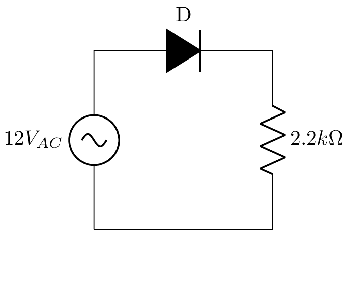
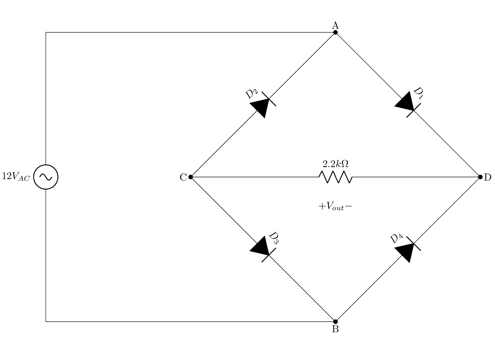

DEPARTAMENTO DE COMPUTAÇÃO DE DIVINÓPOLIS — DECOM-DV
Laboratório de Eletrônica
Turma: 2024/1
Prof. M. Sc. Diego Ascânio Santos
Na área da eletrônica, uma variedade de componentes são empregados na elaboração de circuitos, incluindo Diodos, Transistores e Circuitos Integrados, que são fundamentalmente construídos a partir de semicondutores. Os semicondutores são materiais que não se classificam nem como condutores nem como isolantes, apresentando uma resistividade elétrica que se situa entre ambos, como é o caso do Germânio e do Silício. Estes possuem 4 elétrons na sua camada de valência. Para a fabricação desses componentes, utilizam-se cristais semicondutores dopados. A dopagem de um semicondutor pode resultar em um excesso de elétrons livres ou em um excesso de lacunas (ausência de elétrons). Por isso, existem dois tipos de semicondutores: o tipo N e o tipo P.
O diodo é formado pela combinação de um cristal do tipo P e um cristal do tipo N, resultando em uma junção PN, que constitui um dispositivo de estado sólido básico: o diodo semicondutor de junção. A estrutura é ilustrada na Figura 1 e um encapsulamento típico é mostrado na Figura 2.

O encapsulamento mostrado na Figura 2 apresenta uma tarja branca que indica o terminal catodo (K) e uma tarja preta que indica o terminal anodo (A). A corrente elétrica flui do anodo para o catodo, e o diodo só conduz corrente elétrica no sentido do anodo para o catodo. A tensão de polarização direta do diodo é da ordem de 0,7 V para o silício e 0,3 V para o germânio. A tensão de polarização reversa é da ordem de 50 V para o silício e 10 V para o germânio. A corrente de fuga reversa é da ordem de 1 µA para o silício e 10 µA para o germânio.
O circuito retificador é um circuito eletrônico que converte a corrente alternada (CA) em corrente contínua (CC). A corrente alternada é uma corrente elétrica que muda de direção periodicamente, enquanto a corrente contínua é uma corrente elétrica que flui em uma única direção. A conversão de corrente alternada em corrente contínua é chamada de retificação. A retificação pode ser feita de duas maneiras: meia onda e onda completa.
A tensão de saída de um circuito retificador é pulsante, ou seja, apresenta variações de tensão ao longo do tempo. Para suavizar essas variações — procedimento necessário em aplicações onde a tensão contínua deve ser constante — utiliza-se um filtro capacitivo. O filtro capacitivo é um circuito eletrônico que utiliza capacitores para suavizar a tensão de saída de um circuito retificador. O capacitor armazena energia elétrica e libera essa energia quando a tensão de saída do circuito retificador cai. O filtro capacitivo é composto por um ou mais capacitores, que são conectados em paralelo com a carga.
Com o filtro capacitivo a tensão de saída é uma forma de onda CC quase constante, apresentando somente uma pequena variação nos valores máximos (ripple) causada pela carga e descarga do capacitor.
Como mostrado pela Figura 3, monte o circuito retificador de meia onda na breadboard.

Em posse do multímetro, meça e preencha na tabela abaixo as respectivas grandezas:
| Medida | Valor | Unidade |
|---|---|---|
| Tensão Eficaz — \(V_{\text{AC}}\) | \(V_{\text{RMS}}\) | |
| Tensão Eficaz — \(R_{2.2 k\Omega}\) | \(V_{\text{RMS}}\) | |
| Tensão Contínua — \(R_{2.2 k\Omega}\) | \(V_{\text{DC}}\) |
Com os dados da tabela acima e com as fórmulas necessárias, calcule:
| Grandeza | Valor Calculado | Unidade |
|---|---|---|
| \(I_{R_{2.2 k\Omega}}\) | \(A_{\text{RMS}}\) | |
| \(P_{R_{2.2 k\Omega}}\) | \(mW\) | |
| Tensão Eficaz — \(R_{2.2 k\Omega}\) | \(V_{\text{RMS}}\) | |
| Tensão Contínua — \(R_{2.2 k\Omega}\) | \(V_{\text{DC}}\) |
Conecte um canal do osciloscópio em um ponto de entrada da fonte do gerador de sinais e o outro canal em um ponto de saída do circuito retificador. Ajuste o osciloscópio para visualizar a forma de onda de entrada e saída do circuito retificador.
Com base na forma de onda obtida no osciloscópio, bem como, pelos dados obtidos no equipamento preencha a tabela abaixo:
| Medida | Valor | Unidade |
|---|---|---|
| Tensão Eficaz — \(V_{\text{AC}}\) | \(V_{\text{RMS}}\) | |
| Tensão Eficaz — \(R_{2.2 k\Omega}\) | \(V_{\text{RMS}}\) | |
| Tensão Contínua — \(R_{2.2 k\Omega}\) | \(V_{\text{DC}}\) | |
| Tensão de Pico — \(V_{\text{AC}_{p}}\) | \(V_{\text{pico}}\) | |
| Tensão de Pico Reversa sobre o Diodo — \(V_{\text{D}}\) | \(V_{\text{pico}}\) | |
| Período \((T)\) | \(s\) | |
| Frequência \((f)\) | \(Hz\) |
Desenhe (ou carregue fotos) as formas de onda obtidas no osciloscópio para as grandezas abaixo:
Conecte o capacitor de \(47 \mu F\) em paralelo ao resistor de \(2.2 k\Omega\). Preencha a tabela abaixo com os respectivos valores obtidos:
| Medida | Valor medido no Multímetro | Valor medido no Osciloscópio | Unidade |
|---|---|---|---|
| Tensão Eficaz — \(V_{\text{AC}}\) | \(V_{\text{RMS}}\) | ||
| Tensão de Pico — \(V_{\text{AC}_{P}}\) | \(V_{\text{pico}}\) | ||
| Tensão Eficaz — \(V_{R_{2.2 k\Omega}}\) | \(V_{\text{RMS}}\) | ||
| Tensão Contínua — \(V_{R_{2.2 k\Omega}}\) | \(V_{\text{DC}}\) | ||
| Tensão de Pico — \(V_{R_{2.2 k\Omega}}\) | \(V_{\text{pico}}\) | ||
| Potência Ativa — \(P_{R_{2.2 k\Omega}}\) | \(mW\) |
Desenhe (ou carregue fotos) as formas de onda obtidas no osciloscópio para as grandezas abaixo:
O Retificador de onda completa estudado no laboratório será o de onda completa em ponte, que não depende da utilização de transformadores. A Figura 4 mostra o circuito retificador de onda completa em ponte:

Como podemos observar na Figura 4 a saída da tensão retificada é dada pela diferença de potencial entre os pontos \(C\) e \(D\).
Meça e preencha na tabela abaixo as respectivas grandezas:
| Medida | Valor do Multímetro | Valor do Osciloscópio | Unidade |
|---|---|---|---|
| \(V_{\text{AC}}\) | \(V_{\text{RMS}}\) | ||
| \(V_{\text{AC}_{P}}\) | \(V_{\text{pico}}\) | ||
| \(V_{R_{2.2k \Omega}}\) | \(V_{\text{RMS}}\) | ||
| \(V_{R_{{2.2k \Omega}_{DC}}}\) | \(V_{\text{CC}}\) | ||
| \(V_{R_{{2.2k \Omega}_{P}}}\) | \(V_{\text{pico}}\) |
Com os dados da tabela acima calcule:
| Grandeza | Valor | Unidade |
|---|---|---|
| \(I_{R_{2.2 k\Omega}}\) | \(A_{\text{RMS}}\) | |
| \(P_{R_{2.2 k\Omega}}\) | mW | |
| \(V_{R_{2.2 k\Omega}}\) | \(V_{\text{RMS}}\) | |
| \(V_{R_{2.2 k\Omega}}\) | \(V_{\text{CC}}\) |
Desenhe (ou carregue fotos) as formas de onda obtidas no osciloscópio para as grandezas abaixo:
Adicione o capacitor de \(47 \mu F\) em paralelo ao resistor. Com o capacitor em paralelo, meça e preencha:
| Medida | Valor do Multímetro | Valor do Osciloscópio | Unidade |
|---|---|---|---|
| \(V_{\text{AC}}\) | \(V_{\text{RMS}}\) | ||
| \(V_{\text{AC}_{P}}\) | \(V_{\text{pico}}\) | ||
| \(V_{R_{2.2k \Omega}}\) | \(V_{\text{RMS}}\) | ||
| \(V_{R_{{2.2k \Omega}_{DC}}}\) | \(V_{\text{CC}}\) | ||
| \(V_{R_{{2.2k \Omega}_{P}}}\) | \(V_{\text{pico}}\) |
Desenhe (ou carregue fotos) as formas de onda obtidas no osciloscópio para as grandezas abaixo:
Compare os valores médios das tensões nos dois tipos de retificadores estudados. Comente as diferenças.
Se usarmos um capacitor de \(1000 \mu F\) como filtro, qual o comportamento de ambos os retificadores referente à tensão e à corrente?
| Tensão Eficaz | Tensão Média | |
|---|---|---|
| Fórmula Geral | \(V_{ef} = \frac{1}{T} \sqrt{\int_{0}^{T} v^2(t) dt}\) | \(V_{CC} = \frac{1}{T} \int_{0}^{T} v(t) dt\) |
| Retificador de Meia Onda | \(V_{o} = \frac{V_{ef}}{\sqrt{2}}\) | \(V_{CC} = \frac{\sqrt{2} V_{ef}}{\pi}\) |
| Retificador de Onda Completa | \(V_{o} = V_{ef}\) | \(V_{CC} = \frac{2 \sqrt{2} V_{ef}}{\pi}\) |